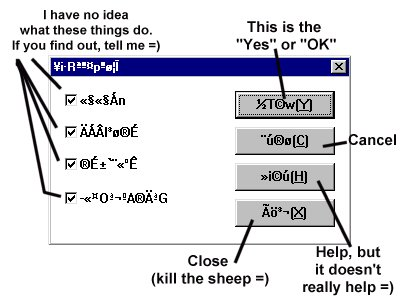
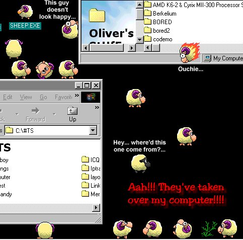

This is a hilarious (and "cute" I guess... =) program that makes sheep appear on your computer screen! They walk around and do all kinds of stuff! You can run it multiple times too (do it and soon there will be "weird" things popping up)... I do not know who made it, but it's really cool. Thanks to Van for the program =)
CLICK HERE to download!
If you double click on the sheep, you get this screen: (I only know what the 4 buttons on the side do)

I'm guessing it's like that because the
programmer spoke a different language, so the program is in that
language...
Here's a screenshot:
